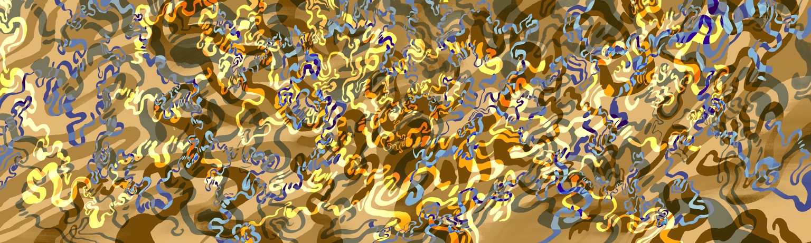
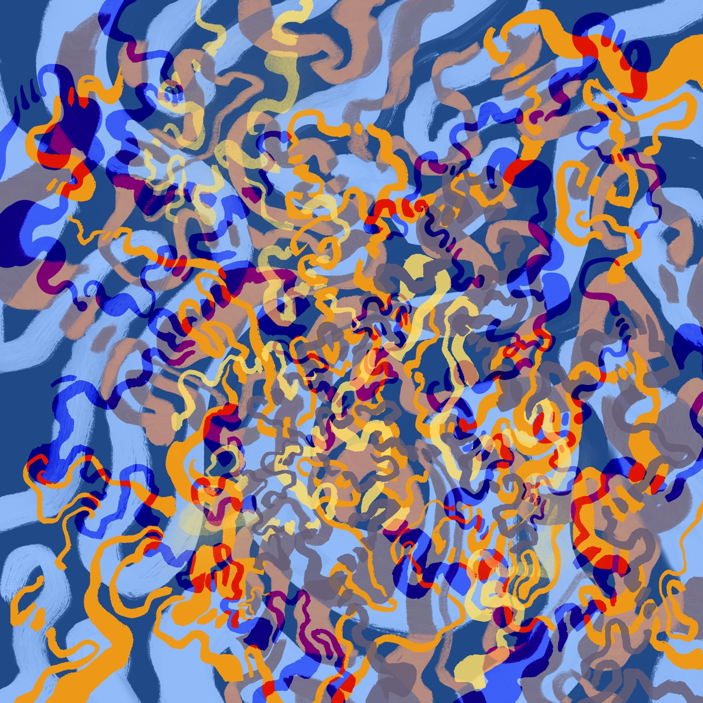

[ § 04 ]
Article
Selected writing and art criticism.
PAINTING · MOVING IMAGE · IMAGE SYSTEMS
Qianying Wang is a visual artist and researcher working across painting, moving image and code-assisted image processes. Her practice examines how images are perceived, remembered and transformed.


Selected writing and art criticism.

[ § 01 ] CV
Her research focuses on visual culture and contemporary art theory, with particular attention to visual experience, aesthetic judgement, cognitive mechanisms and technological mediation.